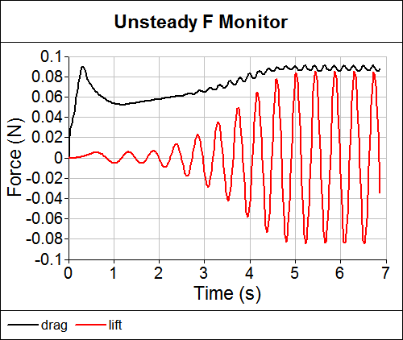

December 2012: Unsteady Caedium CFD Simulation Help
Holiday and gift-giving season is upon us, so what can you expect to unwrap in the last Symscape newsletter of 2012? How about tips on when to use an unsteady Caedium Professional CFD simulation? Coverage of Caedium's appearance at SC12 with Asetek? The latest batch of blog posts? We've got it all covered. Thanks for supporting Symscape in 2012 and keep it right here for more Symscape goodness in 2013.
Unsteady Caedium CFD Simulation ForcesLift and drag for vortex shedding behind a cylinder
Steady-State or Unsteady CFD Simulation?
"How do I know in advance whether to perform a steady-state or an unsteady CFD simulation?" is a common question I get asked. The simple answer is, "you don't know", so I thought I would provide some help on when to use unsteady (also know as transient or time-dependent) simulations. I'll outline a process and tell-tale signs to help you make a guided decision. Read more >>
Caedium Stars at SC12 in Asetek Demonstration
Caedium CFD Simulations at Asetek SC12 Booth
SC12 - the meet-up for all things supercomputing is now over. Our Microsoft collaborator, Wen-ming Ye, was at SC12, and while he was on the show floor he snapped some pictures of the Asetek liquid-cooling cluster running Caedium CFD simulations. So for anyone who missed the show, enjoy the pictures below thanks to Wen-ming. Read more >>
Caedium CFD Simulation Featured During InsideHPC Interview With Asetek at SC12
See if you can spot the Caedium CFD simulation in this video (hint: 3:01) from SC12 featuring an interview by InsideHPC with Asetek CEO André Eriksen. Read more >>
Blog Posts
Fluid Dynamics News: More APS Division of Fluid Dynamics Meeting 2012
I mentioned last week that fans of fluid dynamics were in for a real treat with The American Physical Society's (APS) Division of Fluid Dynamics (DFD) meeting held in San Diego, November 19-20, 2012, and it did not disappoint. For more APS DFD stories ranging from shockwaves to the structure of an owl's wing, read on. Read more >>
Fluid Dynamics News: APS Division of Fluid Dynamics Meeting 2012
If you are into fluid dynamics then you have a real treat in store over the next couple of days. The American Physical Society's (APS) Division of Fluid Dynamics (DFD) meeting is underway in San Diego and runs November 19-20, 2012. For a taster of the eagerly anticipated presentations here's a brief selection ranging from huddling penguins to knuckleball soccer kicks. Read more >>
Aerodynamics News: Trucks, Racecars, and Bikes
Another news blast, this time with an aerodynamics theme. Read on to discover how trucks can be more efficient, how racecars and bikes can go faster, and how to make a stunning McLaren ad. Hint - it's all down to aerodynamics. Read more >>
Feedback
Questions? Ideas? Problems?